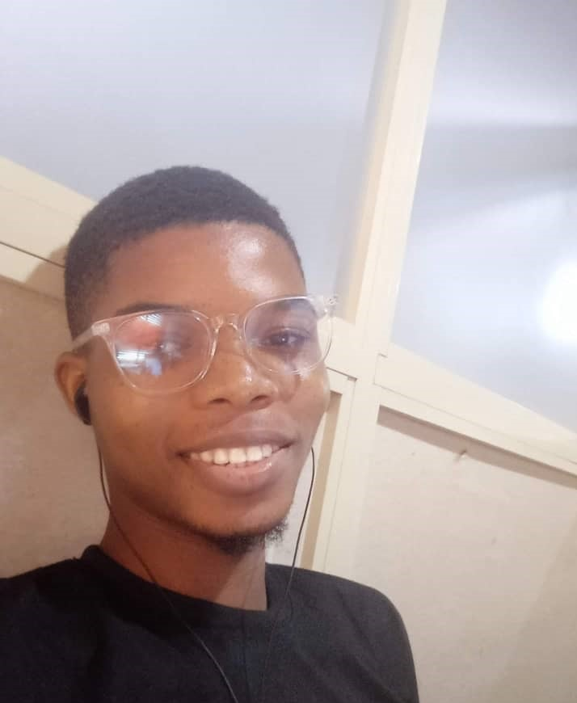

A SHORT BIO
HELLO! MY NAME IS ONATOLA AYOMIDE 😇

I'm an INQUISITIVE, FOCUSED, COMMITED and INNOVATIVE person. I seek and acquire knowledge from tech enthusiasts.
I am currently enrolled in the front-end engineering track at Altschool with the student ID ALT/SOE/8272 . My current goal within Altschool is to make the institution proud and spread the message of Altschool worldwide. I have several diverse reasons for joining Altschool.
I envision a promising future for Altschool. I can't help but see Altschool as the next Andela. I firmly believe that Altschool is on a path to great success, so why would I want to miss this opportunity? I am committed to doing my best to cover the fees and benefit from the expertise of tech professionals. My aspiration is to gain valuable knowledge from Altschool Africa and become a top-notch front-end engineer. With the help of God and consistency, I hope to achieve this.
| Hobbies | Priorities |
|---|---|
| Coding | Focus on my tech career |
| Reading Motivational/Insipirational Books | Code at least two hours a day consistently |
| Be the best in whatever I do |